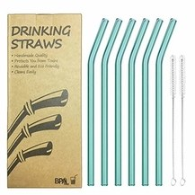
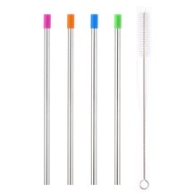

After drinking from a variety of non-plastic straws over the course of two weeks, we can confidently tell you that the winner of our best reusable straw product test was...a tie. So much about a straw—the length, diameter, and material—is dependent on personal preference and type of drink. We ultimately decided that the best plastic alternative is either glass or steel. Read on to decide which material is best for you; for the specifics of how we tested, scroll to the bottom of the page.
The Best Glass Straw: Korsreel Bent Glass Drinking Straws

We had our doubts about glass straws going into the test—they seem so delicate!—but we were pleasantly surprised by the ones from Korsreel, which come six to a pack with two cleaning brushes. The first thing we noticed upon pulling them out of the box was how lightweight but durable they felt. The glass material feels like a natural extension of a glass cup and is very comfortable to put to your lips. We tried to shatter one of the straws a few times by dropping it on our desks, but it remained intact and even bounced back a bit. The glass is easy to clean, and even though the straws had a slight bend, the pipecleaner-like brush had no trouble gliding all the way through. As for aesthetics, these were some of the most appealing straws we tested. They come in a variety of translucent colors, all of which were decidedly less obnoxious than the bright
The Best Steel Straw: Yihong Stainless Steel Metal Straws
Stainless steel straws are a popular alternative to plastic, but truthfully, we didn't like them very much until we tried the Yihong ones. We found stainless steel to be too sensitive to temperature—iced coffee was almost unpleasant to drink because the straw got so cold around our lips. These straws solve that problem thanks to a half-inch silicone band at the top. The protective covering means that no matter how cold your drink is, your lips won't feel it. Plus, the silicone creates a sort of cushion that prevents the steel from clinking against your teeth (if you're in the habit of chewing straws, you'll appreciate the silicone band). We tested both straight and curved Yihong straws and didn't prefer one style over the other.
How We Tested
Galvanized by our work cafeteria's immediate removal of plastic straws—and Starbucks' announcement that it would eliminate all plastic straws from stores by 2020—we set out to find a viable alternative that could be used again and again in both cold and warm drinks. We tested a total of 10 straws made from bamboo, silicone, steel, and glass. We assigned each straw a number, then drank from one every day until we had tested them all. We cleaned the straws, and dropped and tried to bend them to test for durability.
The Takeaway
As more businesses and cities ban plastic straws, you're going to have either find an alternative or learn to live without one. Our favorite reusable straws were made of glass or a combination of steel and silicone. If you're looking to get the most bang for your buck, buy Korsreel's glass straws. They come six to a package, are made of shatter-free glass, and are as translucent as traditional plastic straws. If you don't trust glass straws to stay intact, opt for Yihong's stainless steel straws with a silicone band that protects your lips and teeth.
CONTACT
Fan? Drop a note!
Chicago, US
Phone: +00 991561234
Email: legal@foodelico.com
 Kshitiz Goel
Kshitiz Goel